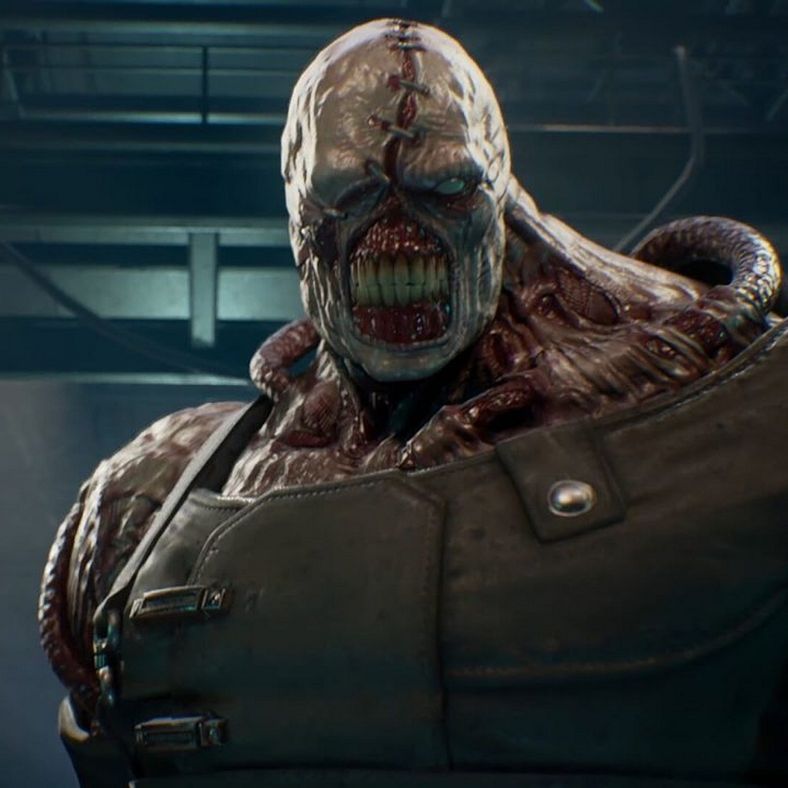

Nemisis, Resident Evil Character
The Nemesis, also called the Nemesis-T Type, the Pursuer[3] or the Chaser (追跡者, Tsuisekisha),[4][5] is a fictional character in Capcom's Resident Evil franchise.
Although smaller than other Tyrant models, the creature dwarfs a typical human, and possesses vastly superior intelligence and physical dexterity to its undead peers.

Powers and Abilities.
Superhuman Strength: Nemesis possesses superhuman strength.
Superhuman Speed: Despite his large and bulky physique, Nemesis is capable of outrunning any human being.
Superhuman Durability: Nemesis is extremely durable.
INDEX FILE
List of directions to lair .
1. I'll start directly from U.S.A to the place or land where we can get info about Nemesis.
2. Then I'll tkae a flight and go to the Resident's place of Nemesis.
3. I'll cathe the Resident Evil Nemesis at the end of teh game.